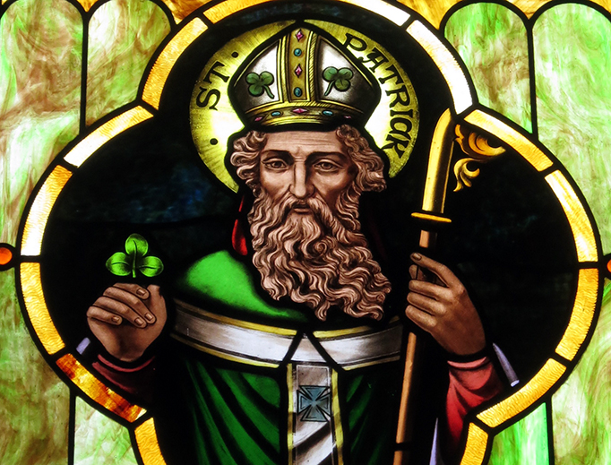
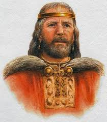
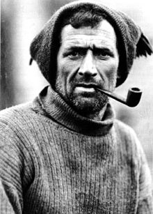
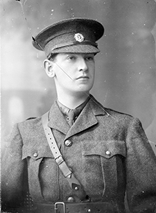

The People
St Patrick
Saint Patrick was a fifth-century Romano-British Christian missionary and bishop in Ireland. Known as the "Apostle of Ireland", he is the primary patron saint of Ireland, the other patron saints being Brigit of Kildare and Columba.
It is known that he was raised near a village called Banna Vemta Burniae but its location cannot be identified. It may have been lowland Scotland but is equally likely to have been Wales, which was under Roman control at the time.
More InformationBrian Boru
Brian Boru was an Irish king who ended the domination of the High Kingship of Ireland by the Uí Néill. Building on the achievements of his father, Cennétig mac Lorcain, and especially his elder brother, Mathgamain, Brian first made himself King of Munster, then subjugated Leinster, eventually becoming High King of Ireland. He was the founder of the O'Brien dynasty.
Tom Crean
Thomas Crean, was an Irish seaman and Antarctic explorer who was awarded the Albert Medal for Lifesaving. Tom Crean was a member of three major expeditions to Antarctica during what is known as the Heroic Age of Antarctic Exploration, including Robert Falcon Scott's 1911–13 Terra Nova Expedition
More Information
Michael Collins
Michael Collins was an Irish revolutionary, soldier and politician who was a leading figure in the early-20th-century Irish struggle for independence. He was Chairman of the Provisional Government of the Irish Free State from January 1922 until his assassination in August 1922.
More Information
Éamon de Valera

Éamon de Valera was a prominent statesman and political leader in 20th-century Ireland. His political career spanned over half a century, from 1917 to 1973; he served several terms as head of government and head of state. He also led the introduction of the Constitution of Ireland.
More Information
Sigtrygg Silkbeard

Sigtrygg II Silkbeard Olafsson was a Hiberno-Norse king of Dublin of the Uí Ímair dynasty. He was caught up in the abortive Leinster revolt of 999–1000, after which he was forced to submit to the King of Munster, Brian Boru. Sitric Silkbeard was the son of Óláfr Sigtryggsson (known as Amlaíb in Irish sources).
More Information